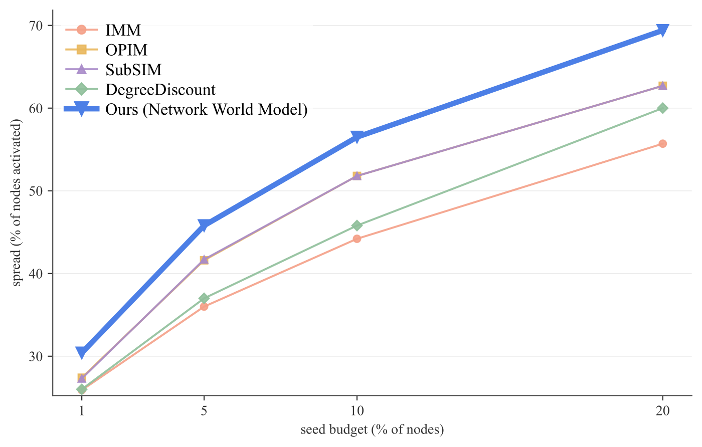
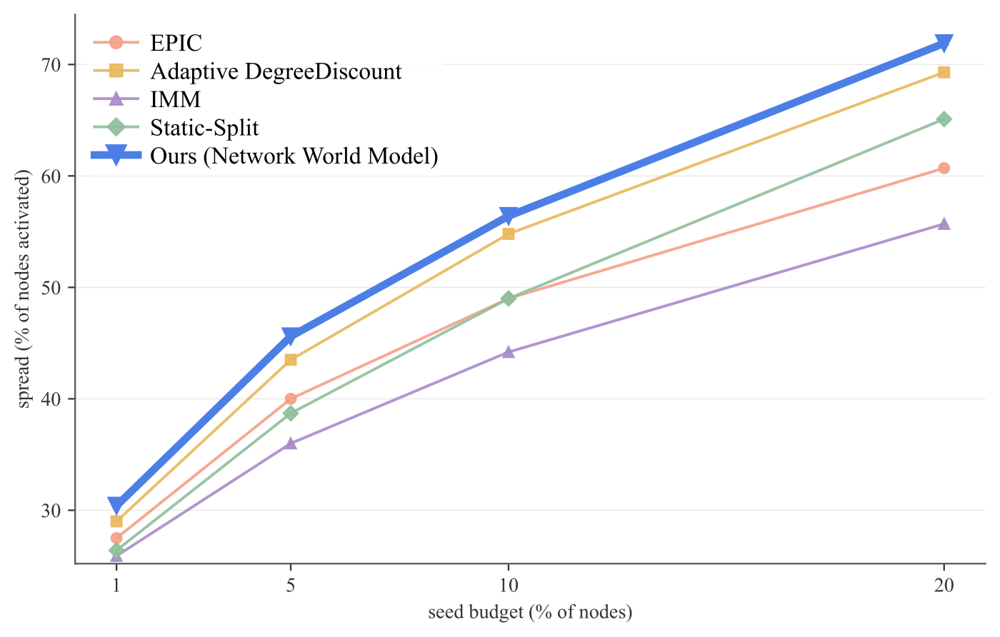
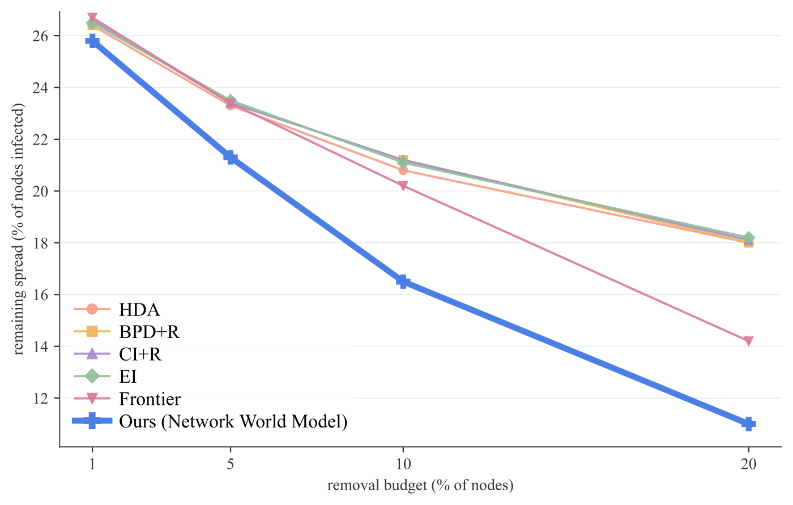
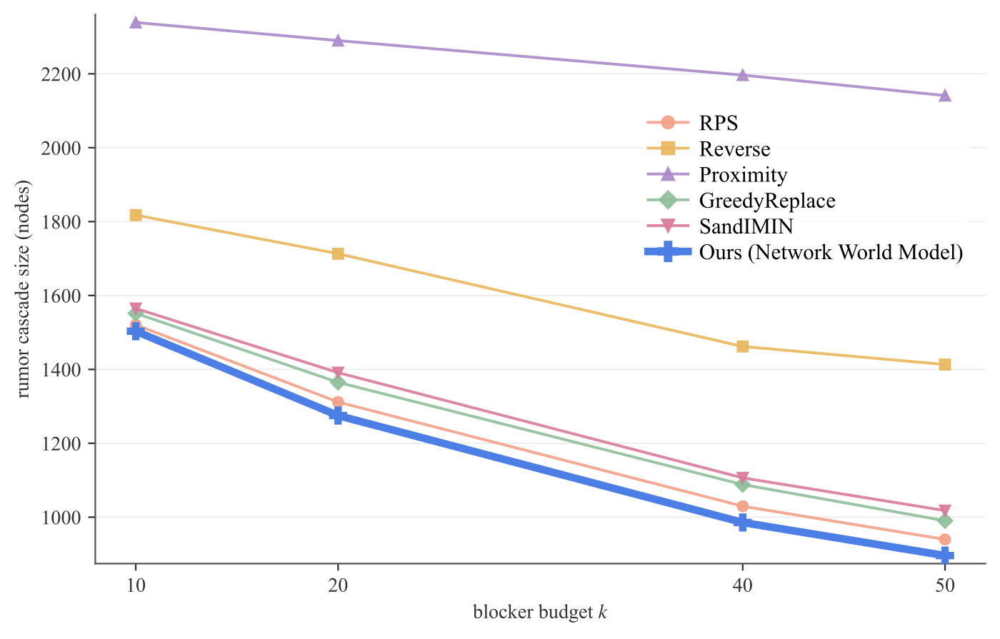
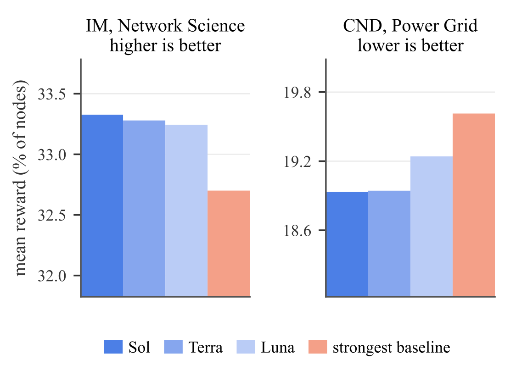
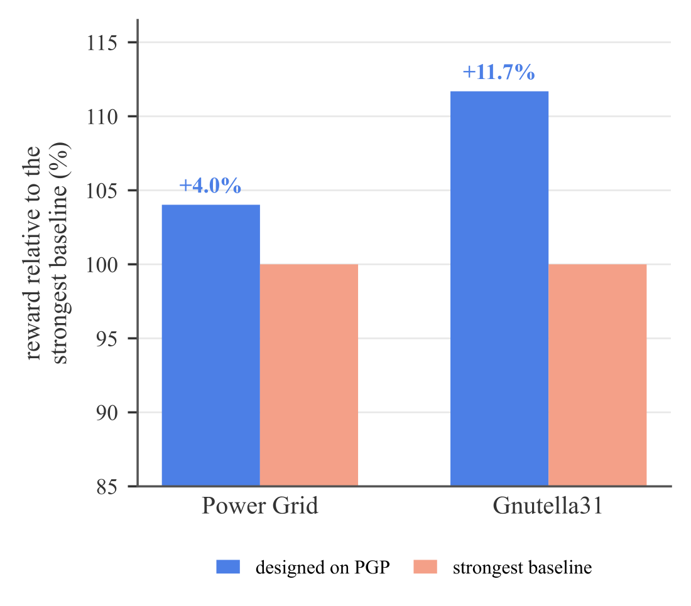
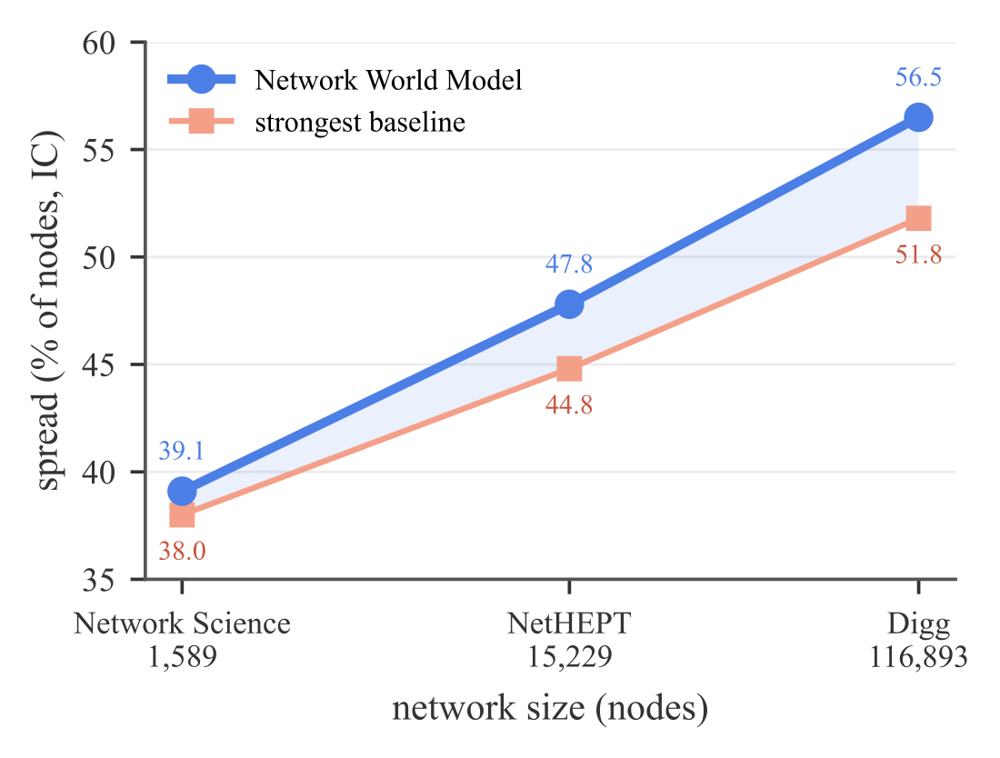
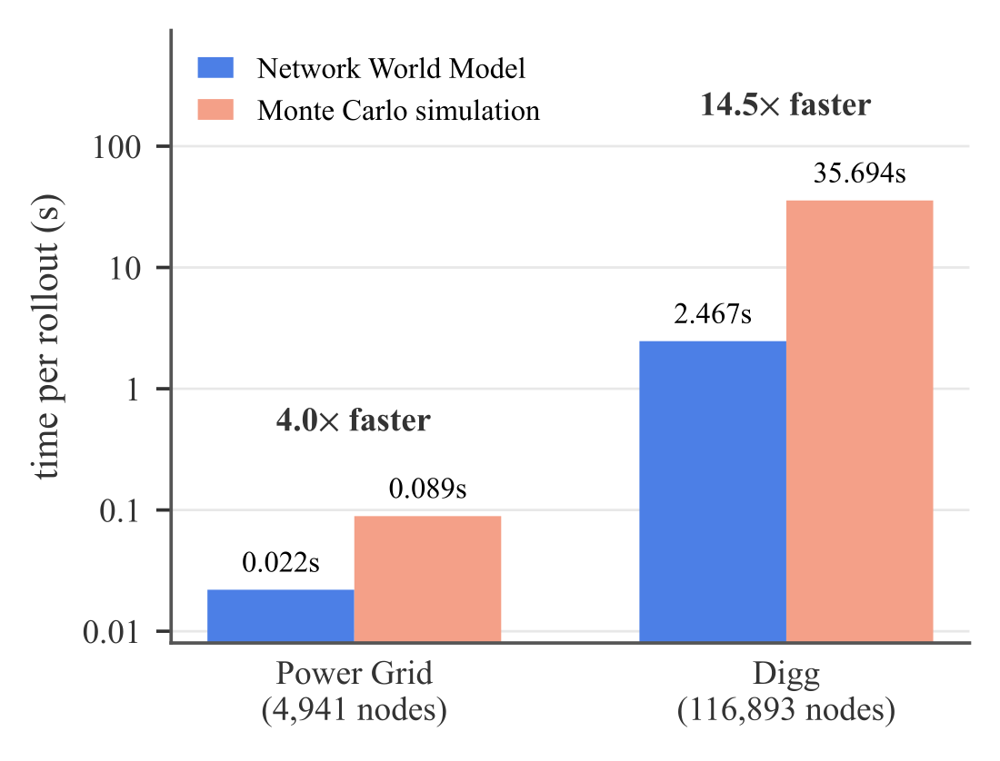
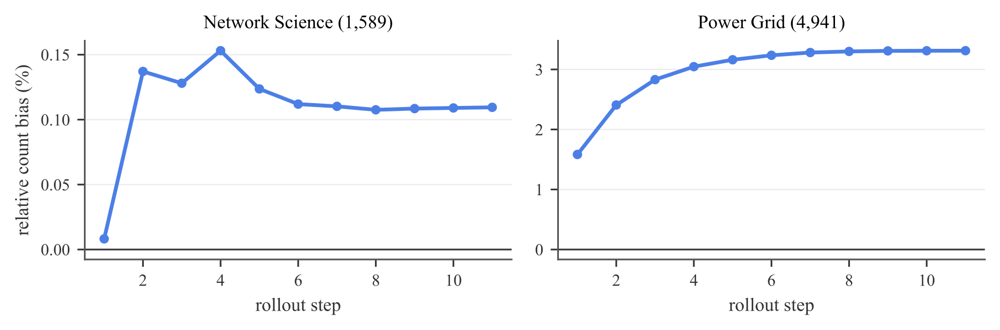

Abstract
World models, which simulate an environment and predict how it changes under actions, are increasingly used in real-world applications such as robotics. Complex systems call for the same tool because the effect of an action is not immediate. Seeding nodes for a campaign, or immunizing nodes against an epidemic, changes little on its own; what matters is the outcome that unfolds over the steps that follow. Designing an algorithm that selects such actions to maximize expected performance on a task is inherently iterative, and every candidate must be scored by the outcome it produces. Obtaining that outcome has relied on simulation, whose cost becomes a bottleneck when candidates are evaluated over many sampled trajectories. We propose an action-conditioned Network World Model that learns a network's diffusion dynamics under interventions over time, applies each action to the network, and predicts the outcome that follows. It serves as a fast evaluator inside an algorithm design loop in which a coding agent designs and refines executable algorithms using feedback from full rollouts, action-level credit, and counterfactual probes over alternative interventions. Across eight network tasks and five diffusion models, the designed algorithms match or exceed the strongest reported baseline in 138 of 141 settings while enabling up to 14.5 times faster rollouts than Monte Carlo simulation.
Key Results
Method
A task instance fixes a network, its diffusion process, the constraints on actions, and a horizon \(H\). An algorithm returns a plan of actions, and the plan is scored by the outcome the network reaches after \(H\) steps. Computing that outcome exactly is #P-hard, so every candidate must be scored from many sampled trajectories, and simulation becomes the bottleneck of the search. We split the problem in two: learn a world model of the dynamics under interventions, then search for algorithms against it.
Network World Model
An action changes the network in two ways: through an immediate effect that is known exactly, and through the diffusion that follows. The model applies the first and learns the second:
- Exact interventions. \(T_{\mathrm{exo}}\) writes each action into the network and its state before diffusion takes its step: a seeded node, a removed node or edge, or a changed contact weight. Applying the intervention exactly removes intervention error from the rollout bound and tightens the selection guarantee below.
- Action conditioning. Features \(\boldsymbol{\eta}(a_t)\) record which operation touched each node and edge and by how much, because distinct operations can leave similar post-intervention states. Message passing runs on the edited network, so removed edges carry no messages and downweighted edges contribute proportionally less.
- Structured transition head. The readout is constrained to the known form of the process, leaving only its parameters to learn. For a cascade, \(g(\mathbf{h}_v) = 1-\prod_{u\to v}(1-q_{uv}z_u)\), where \(q_{uv}\) is a learned transmission probability and \(z_u\) marks the frontier.
- Sampled rollouts. Each step draws a state instead of carrying probabilities forward, which keeps every trajectory consistent with the process. A candidate and the current best are advanced under common random numbers, so their difference is not dominated by process variance.
Algorithm Design Loop
Each round, an LLM coding agent writes an executable candidate algorithm, drawing on a library of classical algorithms for the task that it may reuse, combine, or extend. The Network World Model rolls out the candidate and the current best algorithm on the same \(n\) sampled trajectories. Search operators favor exploration early and increasingly refine the current best algorithm as evidence accumulates. Beyond the task score, the model returns three kinds of feedback, one for each way a plan can be revised:
Rollout diagnostics
How the process evolved under the plan: the score and its standard error, the nodes reached at each step, and the step at which spreading stops. They come from the scoring rollouts at no extra cost.
Action-level credit
What each action contributed, measured by removing it under the same rollout seed:
Counterfactual probes
Before writing the next candidate, the agent asks what-if questions about actions outside the plan, such as swapping a seed. One probe uses gradients from a mean-field rollout to flag promising and weak actions.
Paired selection. A fresh seed \(\xi\) is drawn every round, and the candidate \(\pi\) replaces the current best \(\hat{\pi}\) only when its mean paired gain clears the standard error of the paired differences:
Re-scoring the incumbent on the fresh seed every round keeps a favorable realization from carrying it forward.
Reliability of World-Model-Based Selection
Suppose the one-step transition error of the Network World Model is at most \(\epsilon\) over the states that algorithms in the search space \(\Pi\) can reach within the horizon \(H\), the task score has range at most \(B_R\), and the returned algorithm \(\hat{\pi}\) is \(\eta_{\mathrm{search}}\)-suboptimal under the learned evaluator. Then its selection regret under the true dynamics \(P\) is bounded:
Exact reproduction of every rollout is not required for reliable selection: the downstream loss is controlled by the accumulated transition error and the search error. The paper also proves that pairwise rankings are preserved and that the best algorithm is recovered exactly under a sufficient selection margin.
Eight Tasks, Five Diffusion Models
One world model design and one search loop cover three problem families. Every task is evaluated on real networks with about \(10^3\) to more than \(10^5\) nodes. Five tasks intervene on a spreading process, two infer its hidden cause, and one forecasts real cascades.
Influence maximization
Choose seed nodes whose cascade reaches the most nodes.
Adaptive influence maximization
Commit seeds over rounds, each after observing how the last batch spread.
Critical node detection
Remove nodes ahead of a known outbreak to contain it.
Influence blocking
Counter-seed, block nodes or arcs, or cut weights against a spreading rumor.
Epidemic control
Vaccinate, quarantine, cut arcs, or reduce contacts to limit an epidemic.
Source localization
Name the source set behind an observed spread.
Cascade reconstruction
Recover who was infected, when, and by whom from a partial observation.
Cascade prediction
Predict the final popularity of a real, partly observed cascade. No simulator is involved.
Datasets: 20 networks, from 1,005 to 616,316 nodes
| Dataset | Nodes | Edges | Tasks |
|---|---|---|---|
| Email-EU | 1,005 | 24,929 | Influence blocking |
| UCI Students | 1,266 | 6,451 | Cascade reconstruction |
| Network Science | 1,589 | 2,742 | Influence maximization, adaptive influence maximization |
| Cora-ML | 2,810 | 7,981 | Source localization |
| Power Grid | 4,941 | 6,594 | Critical node detection, source localization |
| CA-GrQc | 5,242 | 14,484 | Cascade reconstruction |
| Oregon1 | 10,670 | 22,002 | Epidemic control |
| PGP | 10,680 | 24,316 | Critical node detection |
| Infectious SocioPatterns | 10,972 | 44,517 | Epidemic control |
| NetHEPT | 15,229 | 62,752 | Influence maximization, adaptive influence maximization |
| RT-Pol | 18,470 | 48,053 | Cascade reconstruction |
| Gnutella24 | 26,518 | 65,369 | Influence blocking |
| Cit-HepTh | 27,769 | 352,768 | Influence blocking |
| Taoke | 29,711 | 95,012 | Cascade prediction |
| Deezer | 47,538 | 222,887 | Source localization |
| Brightkite | 58,228 | 214,078 | Epidemic control |
| Gnutella31 | 62,561 | 147,878 | Critical node detection |
| Digg | 116,893 | 2,011,447 | Influence maximization, adaptive influence maximization |
| Digg (cascades) | 279,630 | 1,731,653 | Cascade prediction |
| APS | 616,316 | 3,304,400 | Cascade prediction |
For the three cascade-prediction corpora, the counts describe the full underlying network, while the runs replay a subsample restricted to the most active participants.
Results
Every returned algorithm and every baseline is replayed independently on the trusted Monte Carlo simulator with 200 samples, so the world model used during the search never scores its own results. The design loop runs \(G = 10\) rounds with \(n = 200\) sampled rollouts per evaluation, horizon \(H = 10\), and six probes per round, with GPT-5.6 Sol as the coding agent.
Designed algorithms against the strongest baselines
The designed algorithms improve on the strongest existing method in all eight tasks and match or exceed the strongest reported baseline in 138 of 141 settings. Each cell reports IC / LT (IC / CLT for influence blocking, SIR / SIS for epidemic control). Bold marks the best value, and n/a marks an out-of-memory error or a timeout.
Influence maximization (IC / LT): spread, % of nodes activated (↑)
| Network Science (1,589 nodes) | Digg (116,893 nodes) | |||||||
|---|---|---|---|---|---|---|---|---|
| Method | 1% | 5% | 10% | 20% | 1% | 5% | 10% | 20% |
| IMM | 8.7/10.9 | 24.8/30.2 | 38.0/45.1 | 59.2/68.5 | 25.9/47.0 | 36.0/60.9 | 44.2/69.7 | 55.7/79.6 |
| OPIM | 8.8/10.8 | 24.2/29.5 | 37.7/45.3 | 58.3/67.4 | 27.4/50.5 | 41.6/68.4 | 51.8/77.6 | 62.7/85.5 |
| SubSIM | 8.7/10.7 | 24.3/29.1 | 37.3/45.0 | 57.8/68.5 | 27.3/50.1 | 41.7/68.4 | 51.8/77.7 | 62.7/85.4 |
| DeepIM | 4.8/5.3 | 15.3/20.0 | 27.7/32.9 | 45.8/53.0 | n/a | n/a | n/a | n/a |
| DegreeDiscount | 8.3/10.7 | 23.7/29.7 | 36.3/44.5 | 55.0/65.5 | 26.0/49.6 | 37.0/62.7 | 45.8/70.0 | 60.0/81.6 |
| Network World Model | 8.9/11.3 | 25.3/30.9 | 39.1/46.8 | 60.1/69.3 | 30.4/56.8 | 45.8/73.2 | 56.5/83.1 | 69.4/93.5 |
Adaptive influence maximization (IC / LT): spread, % of nodes activated (↑)
| Network Science (1,589 nodes) | Digg (116,893 nodes) | |||||||
|---|---|---|---|---|---|---|---|---|
| Method | 1% | 5% | 10% | 20% | 1% | 5% | 10% | 20% |
| EPIC | 8.4/10.8 | 23.1/28.7 | 34.6/41.5 | 52.9/62.3 | 27.5/48.4 | 40.0/65.8 | 49.0/74.0 | 60.7/82.4 |
| Adaptive DegreeDiscount | 8.2/10.8 | 23.6/30.2 | 36.5/45.8 | 56.9/69.3 | 29.0/54.2 | 43.5/68.9 | 54.8/79.4 | 69.3/93.6 |
| IMM | 8.7/10.9 | 24.8/30.2 | 38.0/45.1 | 59.2/68.5 | 25.9/47.0 | 36.0/60.9 | 44.2/69.7 | 55.7/79.6 |
| Static-Split | 8.3/10.7 | 24.1/30.3 | 37.5/45.9 | 58.1/69.3 | 26.4/49.6 | 38.7/64.5 | 49.0/73.8 | 65.1/87.5 |
| Network World Model | 8.9/11.3 | 25.2/30.9 | 39.1/46.8 | 60.0/69.4 | 30.4/56.8 | 45.6/73.2 | 56.4/83.0 | 71.9/94.0 |
Critical node detection (IC / LT): remaining spread, % of nodes infected (↓)
| Power Grid (4,941 nodes) | PGP (10,680 nodes) | |||||||
|---|---|---|---|---|---|---|---|---|
| Method | 1% | 5% | 10% | 20% | 1% | 5% | 10% | 20% |
| HDA | 26.5/28.9 | 24.0/27.1 | 21.8/25.4 | 18.6/22.3 | 26.4/31.9 | 23.3/28.5 | 20.8/25.6 | 18.0/21.6 |
| BPD+R | 26.7/29.1 | 24.1/27.5 | 21.9/25.8 | 18.5/22.4 | 26.4/32.0 | n/a | 21.2/25.8 | 18.0/21.6 |
| CI+R | 26.7/29.0 | 24.1/27.3 | 21.9/25.7 | 18.5/22.3 | 26.6/32.0 | 23.4/28.5 | 21.2/25.9 | 18.1/21.6 |
| EI | 26.8/29.2 | 24.5/27.9 | 22.1/26.0 | 19.1/23.2 | 26.5/32.0 | 23.5/28.8 | 21.1/25.9 | 18.2/22.2 |
| Frontier | 26.3/28.6 | 22.7/25.0 | 18.7/20.4 | 10.7/10.7 | 26.7/32.0 | 23.4/27.9 | 20.2/23.6 | 14.2/14.5 |
| Network World Model | 26.2/28.2 | 22.0/24.1 | 17.3/19.6 | 10.2/10.7 | 25.8/31.1 | 21.3/26.7 | 16.5/21.5 | 11.0/13.0 |
Influence blocking (IC / CLT): rumor cascade size (nodes) (↓)
| Email-EU (1,005 nodes) | Gnutella24 (26,518 nodes) | |||||||
|---|---|---|---|---|---|---|---|---|
| Method | 10 | 20 | 40 | 50 | 10 | 20 | 40 | 50 |
| RPS | 60.2/70.9 | 47.4/56.7 | 35.0/42.8 | 31.9/39.1 | 1520.6/1625.3 | 1311.6/1380.6 | 1029.6/1076.5 | 939.8/980.4 |
| Reverse | 61.0/73.1 | 49.2/57.9 | 37.2/44.8 | 34.5/42.1 | 1817.6/1961.8 | 1713.1/1856.4 | 1462.0/1587.7 | 1413.1/1535.7 |
| Proximity | 63.1/74.9 | 52.4/61.2 | 39.6/47.7 | 36.3/44.2 | 2338.9/2531.6 | 2289.9/2481.1 | 2196.5/2379.0 | 2141.1/2319.7 |
| GreedyReplace | 92.2/162.3 | 77.2/163.5 | 60.1/157.3 | 54.8/154.9 | 1551.8/1640.5 | 1364.9/1449.2 | 1088.2/1211.8 | 990.4/1072.4 |
| SandIMIN | 92.5/160.0 | 77.4/158.7 | 63.7/157.8 | 54.4/150.9 | 1564.9/1633.3 | 1391.2/1456.3 | 1106.4/1173.9 | 1017.8/1096.9 |
| Network World Model | 59.4/71.7 | 46.3/55.4 | 34.5/42.2 | 31.0/38.7 | 1503.3/1582.3 | 1275.0/1333.8 | 985.6/1023.0 | 896.0/924.7 |
Epidemic control (SIR / SIS): attack rate, % of nodes ever infected (↓)
| Infectious SocioPatterns (10,972 nodes) | Oregon1 (10,670 nodes) | Brightkite (58,228 nodes) | ||||||||||
|---|---|---|---|---|---|---|---|---|---|---|---|---|
| Method | 1% | 5% | 10% | 20% | 1% | 5% | 10% | 20% | 1% | 5% | 10% | 20% |
| DAVA | 19.9/23.0 | 7.4/8.3 | 1.0/1.0 | 1.0/1.0 | 7.9/9.6 | 1.0/1.0 | 1.0/1.0 | 1.0/1.0 | 40.9/47.1 | n/a | n/a | n/a |
| NetShield+ | 21.2/24.9 | 17.3/20.6 | 12.8/15.6 | 7.4/8.9 | 4.3/5.4 | 2.1/2.3 | 1.8/1.9 | 1.6/1.7 | 24.1/29.4 | 8.5/10.5 | 4.5/5.4 | 2.7/3.0 |
| GreedyWalk | 20.9/24.6 | 16.5/19.8 | 12.3/14.9 | 7.0/8.5 | 4.8/5.9 | 2.5/2.8 | 1.9/2.1 | 1.6/1.7 | 23.2/28.4 | 8.4/10.5 | 4.6/5.5 | 2.8/3.1 |
| EI | 20.7/24.4 | 16.3/19.3 | 11.5/13.6 | 8.1/9.5 | 4.2/5.2 | 2.0/2.1 | 1.7/1.8 | 1.6/1.6 | 23.5/28.7 | 8.7/10.9 | 4.5/5.3 | 2.8/3.1 |
| CI | 20.7/24.3 | 16.1/18.9 | 12.4/14.6 | 6.9/8.1 | 4.2/5.2 | 2.0/2.1 | 1.7/1.8 | 1.6/1.6 | 26.0/31.1 | 10.2/12.3 | 4.7/5.5 | 2.7/3.0 |
| Network World Model | 20.4/19.5 | 12.2/4.1 | 1.0/1.0 | 1.0/1.0 | 2.4/4.3 | 1.0/1.0 | 1.0/1.0 | 1.0/1.0 | 23.2/24.5 | 1.4/1.5 | 1.0/1.0 | 1.0/1.0 |
Source localization (IC / LT): consistency of the recovered sources with the observation, 0 is perfect (↑)
| Method | Cora-ML (2,810 nodes) | Power Grid (4,941 nodes) | Deezer (47,538 nodes) |
|---|---|---|---|
| LPSI | −0.173/−0.130 | −0.106/−0.100 | −0.176/−0.174 |
| Rumor Centrality | −0.237/−0.257 | −0.242/−0.260 | −0.190/−0.200 |
| Dynamic Age | −0.200/−0.183 | −0.234/−0.274 | −0.178/−0.183 |
| Infected-Degree | −0.173/−0.154 | −0.116/−0.119 | −0.178/−0.186 |
| SL-VAE | −0.370/−0.437 | −0.306/−0.323 | −0.314/−0.240 |
| Network World Model | −0.139/−0.106 | −0.080/−0.073 | −0.147/−0.145 |
Cascade reconstruction (IC / LT): referee reward of the decoded history, 0 is perfect (↑)
| Method | UCI Students (1,266 nodes) | CA-GrQc (5,242 nodes) | RT-Pol (18,470 nodes) |
|---|---|---|---|
| Reports | −0.852/−0.946 | −0.791/−0.692 | −1.252/−1.068 |
| Steiner Tree | −0.901/−0.978 | −0.798/−0.753 | −2.618/−2.076 |
| Jordan-Backward | −0.852/−0.946 | −0.791/−0.692 | −1.252/−1.068 |
| DHREC | −1.464/−1.525 | −1.175/−1.176 | −2.471/−2.594 |
| CRI | −0.885/−0.995 | −1.106/−1.151 | −0.785/−0.782 |
| Network World Model | −0.675/−0.717 | −0.566/−0.566 | −0.391/−0.373 |
Cascade prediction : MSLE at the prediction horizon (↓)
| Method | APS (30,000 nodes) | Taoke (29,711 nodes) | Digg (5,000 nodes) |
|---|---|---|---|
| Persistence | 0.288 | 1.101 | 4.222 |
| Szabo-Huberman | 0.098 | 0.716 | 0.834 |
| Hawkes | 0.141 | 0.957 | 2.744 |
| RPP | 0.116 | 1.009 | 3.283 |
| Weng-Communities | 0.196 | 0.850 | 1.142 |
| Network World Model | 0.078 | 0.544 | 0.774 |
Gains hold across budgets




Performance across intervention budgets under IC. Higher is better in (a) and (b); lower is better in (c) and (d).
Against LLM algorithm discovery systems
EoH, OpenEvolve (the open-source implementation of AlphaEvolve), LLaMEA, and ReEvo each run their own search loop, prompts, and published defaults on the same problem, with a fitness function on the exact simulator and the same coding model. None of them sees the Network World Model. The design loop is best at every budget on both tasks, and none of the four systems reaches the strongest classical baseline on Network Science at any budget.
| Influence maximization, Network Science (↑) | Critical node detection, Power Grid (↓) | |||||||
|---|---|---|---|---|---|---|---|---|
| Method | 1% | 5% | 10% | 20% | 1% | 5% | 10% | 20% |
| EoH | 5.5 | 19.5 | 32.5 | 54.6 | 26.6 | 23.4 | 19.4 | 14.3 |
| OpenEvolve | 5.1 | 21.9 | 36.8 | 50.8 | 26.6 | 23.8 | 21.4 | 17.7 |
| LLaMEA | 6.1 | 21.1 | 34.9 | 56.2 | 26.6 | 23.4 | 19.5 | 14.3 |
| ReEvo | 6.6 | 22.3 | 35.5 | 57.0 | 26.6 | 23.5 | 19.6 | 15.0 |
| Network World Model | 8.9 | 25.3 | 39.0 | 60.0 | 26.2 | 22.0 | 17.3 | 10.2 |
Influence maximization on Network Science (spread, % of nodes activated, higher is better) and critical node detection on Power Grid (remaining spread, % of nodes infected, lower is better), under IC. All rows use GPT-5.6 Sol.
Robust to the coding model

Repeating the search with GPT-5.6 Sol, Terra, and Luna, the three finish within 0.1 points of one another on Network Science and within 0.3 points on Power Grid, averaged over budgets, and each beats the strongest baseline.
Transfers across networks

The critical node detection algorithm designed on PGP, replayed unmodified, beats the strongest baseline on Power Grid by 4.0% and on Gnutella31 by 11.7%. Transferred algorithms stay within 0.1 percentage points of algorithms designed directly on the target network.
Scales to larger networks

Influence maximization under IC at the 10% budget. The designed algorithm stays ahead of the strongest baseline from Network Science to Digg, and the gain grows from 1 to 4% on Network Science to 7 to 12% on Digg.
Cheaper than simulation

One world model rollout is 4.0× faster than Monte Carlo simulation on Power Grid and 14.5× faster on Digg. Building the training set costs 38,800 simulator episodes once, while a simulator-based search needs 7,800 episodes every time it runs, so the model pays for itself after about five searches.
How Accurate Is the World Model?
Algorithm design needs three things from the world model: accurate rollouts, reliable candidate selection, and cheap evaluation. One-step \(\Delta\)F1 ranges from 0.87 to 0.99 for IC, LT, and CLT and from 0.85 to 0.86 for SIR and SIS, with Brier scores of at most 0.0006. Free-running rollouts stay within 2.2% of the trusted simulator at the horizon, except under LT, where the model undercounts by 6.0%.
Prediction and rollout quality on Network Science (IC, LT), Email-EU (CLT), and Oregon1 (SIR, SIS)
| Dynamics | \(\Delta\)F1 (↑) | Brier (↓) | Bias (%) |
|---|---|---|---|
| IC | 0.8738 | 0.0003 | +0.1 |
| LT | 0.9926 | 0.0003 | −6.0 |
| CLT | 0.9880 | 0.0001 | −2.2 |
| SIR | 0.8565 | 0.0006 | +0.5 |
| SIS | 0.8461 | 0.0006 | −0.1 |
Decision value on 20 held-out networks per family; regret in % of reward against Monte Carlo selection
| Family | Pref. accuracy [95% CI] | WM regret | Random regret |
|---|---|---|---|
| SBM (in dist.) | 0.902 [0.890, 0.914] | 0.11 | 10.27 |
| BA (in dist.) | 0.861 [0.818, 0.902] | 0.13 | 12.03 |
| WS (shift) | 0.860 [0.832, 0.887] | 1.18 | 10.07 |
For search, what matters is that the model orders candidates the way the true dynamics would. On held-out SBM and BA networks, it agrees with the trusted simulator on 90.2% and 86.1% of candidate pairs, with selection regret of 0.11% and 0.13%. On Watts-Strogatz networks, a topology shift, preference accuracy stays at 86.0% and regret at 1.18%.

BibTeX
@article{alagharu2026network,
title={Network World Models as Environments for Algorithm Design on Complex Systems},
author={Alagharu, Rishab and Pu, Hongji and Memon, Zeeshan and Song, Xinyuan and Hu, Yuntong and Zhao, Liang},
journal={arXiv preprint arXiv:XXXX.XXXXX},
year={2026}
}